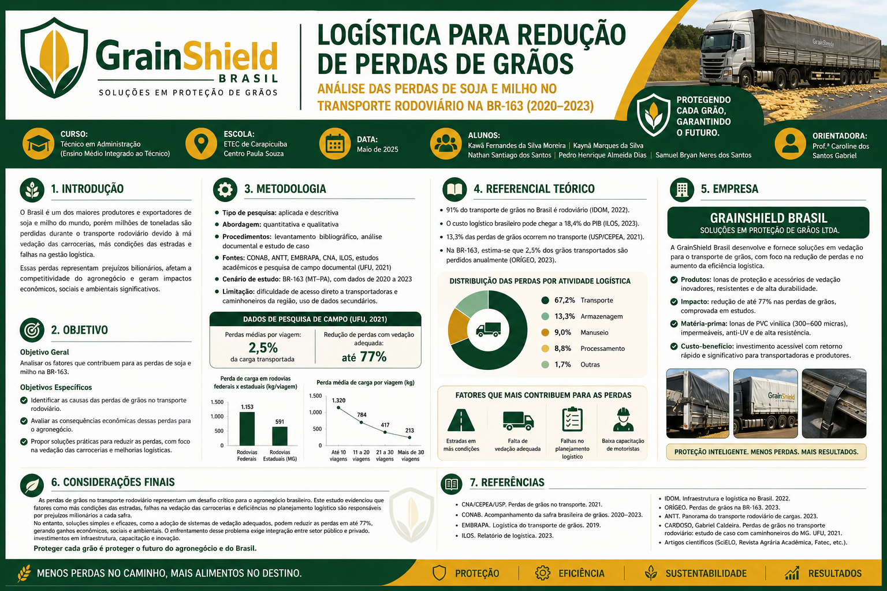
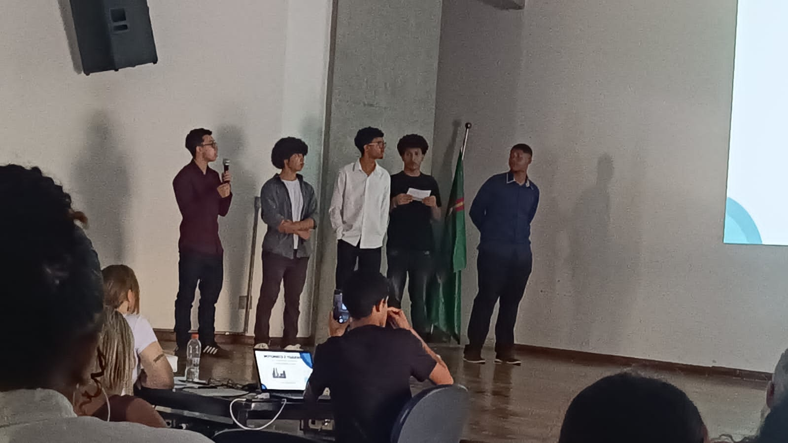
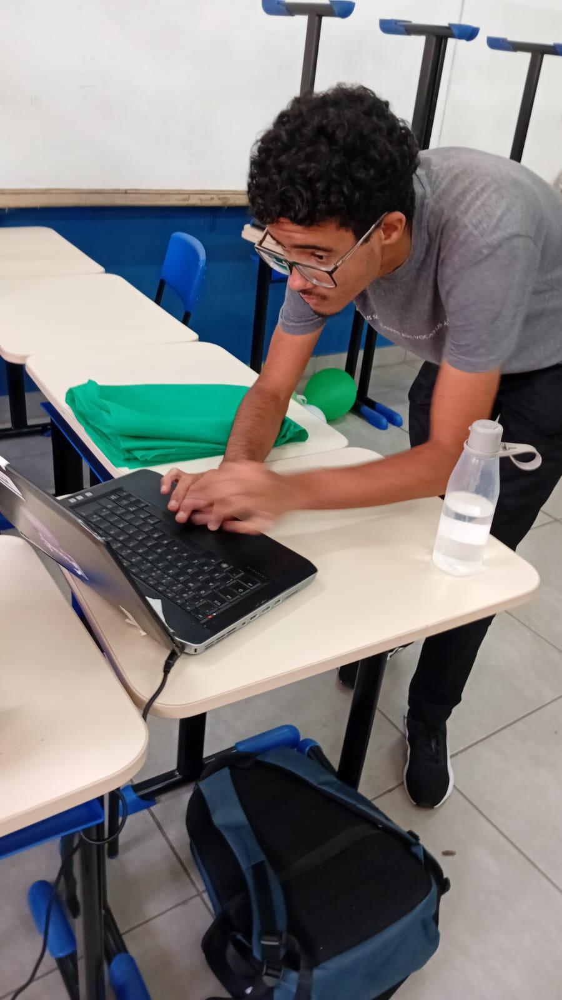
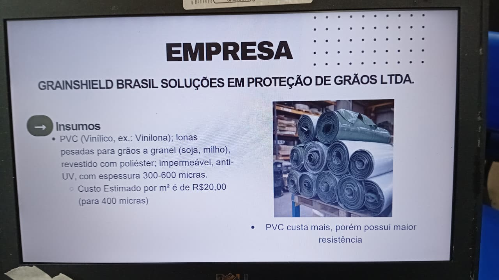
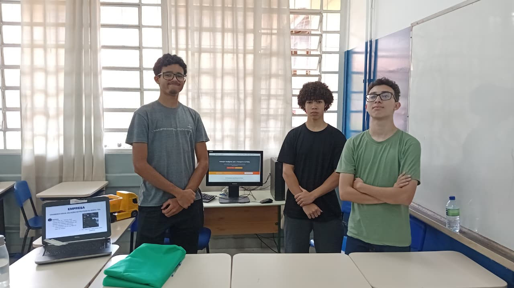

Apresentação para a Banca Examinadora
Vídeo completo da apresentação do Trabalho de Conclusão de Curso
📅 Evento de Apresentação Acadêmica
Data: 2025
Local: ETEC de Carapicuíba
Apresentadores: Kawã Fernandes, Kaynã Marques, Nathan Santiago, Pedro Almeida e Samuel Bryan
Apresentação completa do projeto GrainShield para a banca examinadora da ETEC de Carapicuíba
Galeria de Fotos - Apresentação na Banca
Momentos do evento acadêmico e apresentação

Demonstração do Projeto Físico
Vídeo do trabalho impresso apresentado à banca
Feira de Ciências da ETEC
Apresentação prática e demonstração do projeto para o público
Experiência Prática e Interativa
O projeto GrainShield foi apresentado de forma prática e interativa na Feira de Ciências da ETEC de Carapicuíba, permitindo que alunos, professores e visitantes entendessem o problema das perdas de grãos e conhecessem a solução proposta pela equipe.
A equipe utilizou slides, protótipos e demonstrações para explicar como a vedação adequada de caminhões pode reduzir em até 77% as perdas de grãos no transporte rodoviário.
Destaques do Evento
- ✓ Grande interesse do público visitante
- ✓ Muitas perguntas sobre viabilidade e implementação
- ✓ Feedback positivo sobre a solução prática
- ✓ Reconhecimento da importância do tema para o agronegócio
Galeria de Fotos - Feira de Ciências
Momentos da apresentação e interação com os visitantes



Quer Saber Mais?
Explore todo o projeto GrainShield e seus resultados